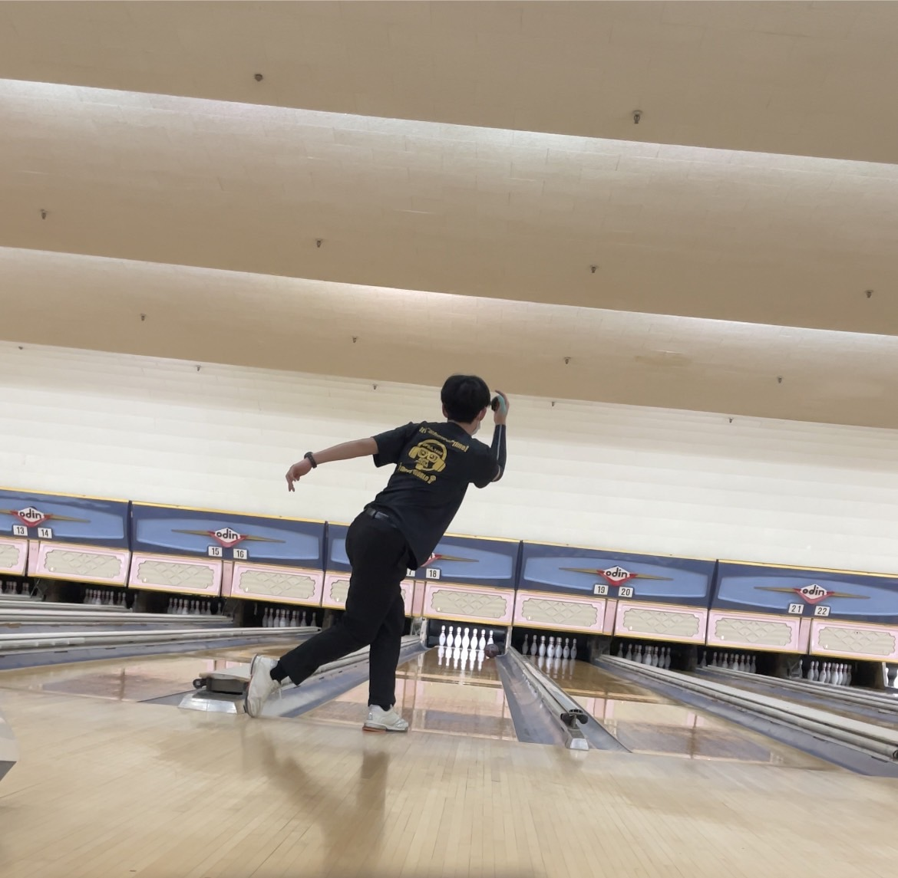

<!DOCTYPE html>
<html lang="ja">
<head>
    <meta charset="UTF-8">
    <meta http-equiv="X-UA-Compatible" content="IE=edge">
    <meta name="viewport" content="width=device-width, initial-scale=1.0">
    <title>プロフィール</title>
    <link rel="stylesheet" href="profile.css">
    <style>
        h1{font-family:cursive;}
        p{font-family:cursive;}
    </style>
    
</head>
<body background="背景3.jpg">
   
</body>
<body>
   
    <h1 align="center">Date</h1>
    <p
    <div style="text-align: center;">
       
        </div>
    <table align="center">

    <tr>
        <th>
    <table  border="1">  
        
        <tr>
            <th>学籍番号</th>
            <th>f22ba089</th>
            <th rowspan="7"></th>
            <th><h>エピソード</h></th>
        
        </tr>
        <tr>
            <th>名前</th> 
            <th>御供俊壮</th>
            <th rowspan="6">
                小学二年生時にそろばんを習い始める。<br>
                それと同時にボウリングに出会い没頭する。<br>
                両立しながら中学校に入学、科学部に入部しロボコンに出会う<br>
                ロボコンの影響で工業高校に進学、くくり募集だったのでいろいろな分野をかじった結果電気科に配属しました<br>
                一年生の時に習い事でやっていたボウリングで全国大会に出場、結果は予選落ちだったが学ぶものがあった<br>
                二年生時に新型コロナウィルスが流行し何もできなくなる。おうち時間でプログラミングに出会う<br>
                三年生時ボウリングで全国大会に参加。またもや予選落ちしてしまう。<br>
                専門学校中央情報大学校に入学する。<br>
                ひたすら勉強に励み基本情報を取得<br>
                関東大会に出場、あと少しのところで決勝トーナメントというところで敗北<br>
                今に至る<br>
               

            </th>
        </tr>
        <tr>
            <th>ゼミ</th>
            <th>中澤ゼミ</th>
        </tr>
        
        <tr>
            <th>生年月日</th>
            <th>2003年8月8日</th>
        </tr>
        <tr>
            <th>出身地</th>
            <th>群馬県前橋市</th>
        </tr>
        <tr>
            <th>血液型</th>
            <th>B型</th>
        </tr>
        <tr>
            <th>趣味</th>
            <th>ボウリング</th>
        </tr>
         </th>
        </tr>
        <tr>
            
        </tr>
    </table>
    <p></p>
    <table style="float:left">
    
    </table>
    
    <h2 align="center">
        過去に取得した資格一覧
    </h2>
    <table border="1" align="center">
        <tr>
            <th>民間資格</th>
            <th>国家資格</tr>
        </tr>
        <tr>
            <th>社団法人全国工業学校長協会主催「計算技術検定試験」3級合格</th>
            <th>第四級アマチュア無線技士　取得</th>
        </tr>
        <tr>
            <th>社団法人全国工業学校長協会主催「計算技術検定試験」2級合格</th>
            <th>経済産業省　第二種電気工事士</th>
        </tr>
        <tr>
            <th>社団法人全国工業学校長協会主催「情報技術検定試験」3級合格</th>
            <th>普通自動二輪免許（小型限定）（AT限定）</th>
    
        </tr>
        <tr>
            <th>一般財団法人職業教育・キャリア教育財団情報活用能力検定　情報システム試験　基本スキル</th>
            <th>経済産業省 基本情報技術者試験</th>
        </tr>
        <tr>
            <th>情報処理技術者能力認定試験　2級合格</th>
        </tr>
        <tr>
            <th>情報処理技術者能力認定試験　3級合格</th>
        </tr>
        
        
    </table>

    <p><a href="jiko.html">趣味について詳しくはこちら</a></p>
    
</body>
<script>
    document.getElementById("roguin").onclick = function(){
        location.href = "jiko.html";
    }
</script>


</html>